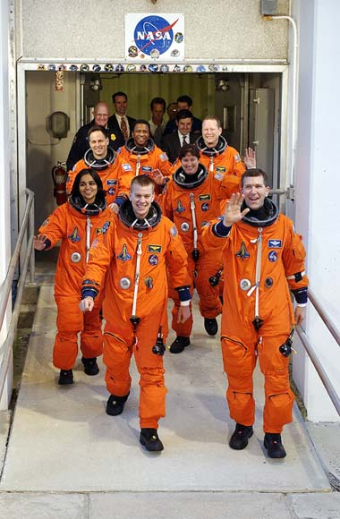
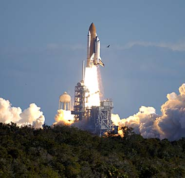

|
Aos
verdadeiros heris do espao
1 de
fevereiro de 2003
 O celular toca. So 13h22. o meu editor. O celular toca. So 13h22. o meu editor.
- o seguinte. A Paula acabou de me ligar do jornal e disse que a Nasa perdeu contato com o Columbia. Eu sei que no seu planto, mas eu estou indo para l agora. Como voc costuma cobrir essas coisas, se voc quiser ir para l...
- Bem, eu vou ver aqui e, se for o caso, eu mando alguma coisa...
Ao desligar o telefone, s me ocorreu que, para variar, os jornalistas de planto deviam estar exagerando. Caiu a linha entre a Nasa e o Columbia. E da? Liguem de novo. Disso a achar que o nibus espacial explodiu ou coisa do tipo... eu j vi os russos passarem vrias horas sem contato com a estao espacial Mir e ela s caiu quando eles quiseram derrub-la. E todo mundo sabe que o perigo dos nibus espaciais na decolagem. Deve estar todo mundo exagerando. Bah.
No deu tempo nem de ligar o computador e o telefone volta a tocar, desta vez na sala. Logo vem o recado: "O Augusto quer falar com voc, ele diz que tem uma notcia urgente". Eu j sabia o que era.
- Al? E a, Augusto, tudo bem?
- Tudo indo. Mas preciso te falar uma coisa. O que voc ainda est fazendo a? V para o jornal! O Columbia explodiu!
- Bem, o que eu tinha ouvido que eles perderam contato com...
- No, voc no est entendendo. O Columbia explodiu. Pe na CNN, pe na CNN.
Ento eu liguei a televiso. A imagem -- a trilha de fumaa constante e interminvel, vagarosamente se dividindo em vrias linhas paralelas, com clares e espasmos ocasionais -- vai ficar na minha memria por pelo menos muitos anos. Possivelmente pela vida toda. E tudo que eu pude fazer foi repetir umas trs vezes a frase, "O nibus espacial explodiu".
E eu comecei a chorar. Aquela imagem, silenciosa, irrefutvel. Os astronautas estavam mortos. No havia o que debater. No era uma perda de contato. Era uma nave espacial com sete bravos exploradores queimando na atmosfera da Terra. Diante dos meus olhos.
Pode parecer dramtico, mas todos os entusiastas da explorao espacial (e estou certo de que muitos dos que esto lendo esse texto o so) sentiram exatamente a mesma coisa, em maior ou menor escala -- a sensao de que talvez nosso lugar no seja mesmo l fora. A noo de que sete vidas foram perdidas pela presuno de que podemos dominar a natureza e de que o esprito humano irrefrevel.
De vez em quando, a natureza responde a essas pretenses dessa espcie bpede primata que calhou de ser inteligente -- normalmente com violncia e contundncia incontestveis. Hoje, ela deu uma dessas respostas. Nossa falibilidade est ainda muito aqum da que precisaramos para garantir que sair da Terra um negcio seguro.
Talvez nunca o seja. H duas semanas, entrevistei um astrnomo da Nasa chamado Donald Brownlee. Ele o principal responsvel pela misso Stardust, que est enviando uma sonda no-tripulada a um cometa para coleta de amostras. E Don pareceu muito convicto de que o lugar dos humanos a Terra. Ele at aposta em viagens de ida e volta a Marte, asterides ou outros objetos prximos. Mas nada como a noo grandiosa de "conquistar nosso espao entre as estrelas".
A trilha de fumaa do Columbia me fez pensar, da forma mais dura possvel, que talvez ele tenha razo. Talvez devssemos mesmo parar de sonhar com o espao e voltar a pensar na Terra e em como preservar a riqueza que temos aqui. Cada vez que uma desgraa como essa acontece, o sonho dos que, como eu, acreditam na ausncia de limites para a expanso da humanidade morre um pouquinho mais.
irnico que a maioria dos astronautas precise morrer para se tornar heri. Exceto pelos cones Yuri Gagarin, Neil Armstrong, Buzz Aldrin e meia dzia de outros figures da conquista do espao, ningum lembra o importante papel que cada misso, que cada homem ou mulher que j foi ao espao, tem no contexto da explorao espacial -- ou mesmo da histria humana.
Eu mesmo admito a ignorncia. Antes do acidente do Columbia, confesso s estar familiarizado com Ilan Ramon, e isso s por conta da publicidade em torno de seu ineditismo -- o primeiro astronauta israelense no espao. No fosse pela tragdia, eu provavelmente passaria a vida sem nunca ter ouvido falar de Rick Husband, Michael Anderson, Laurel Clark, David Brown, William McCool e Kalpana Chawla, os seis astronautas que morreram junto com Ramon enquanto o Columbia incandescente encontrava seu destino no solo do Texas.
E eles so heris. E nos lembram agora que todos os outros que j voaram, e todos os que ainda esto por voar, tambm so heris. So pessoas como essas que, na vida ou na morte, sustentam o mais ambicioso dos projetos humanos -- o de transcender sua prpria origem e ampliar os limites de seu domnio alm do que a natureza nos designou.
No pela conquista. No pela arrogncia. Mas pela sabedoria de buscar um futuro melhor para a humanidade. A derradeira misso do Columbia tinha um carter nica e exclusivamente cientfico -- a meta era saciar a curiosidade, o desejo de aprender e a nsia de poder melhorar a vida dos bilhes que vivem neste planeta. A bordo do veculo, os astronautas conduziram experimentos japoneses, canadenses, norte-americanos e europeus. Ilan Ramon havia nascido em Israel. Kalpana Chawla havia nascido na ndia. No espao, no importa se voc est numa nave americana, chinesa ou russa; a Terra uma s e a humanidade uma s.

Nenhum empreendimento humano conseguiu gerar mais esforo de cooperao entre diferentes povos que a explorao espacial. Com os satlites de comunicao, o mundo ficou menor; com as tripulaes internacionais, o mundo ficou um s. E o mundo hoje chora a perda do nibus espacial Columbia e de sua tripulao.
Em 1986 aconteceu uma tragdia similar, quando o nibus espacial Challenger se transformou numa bola de fogo um minuto aps o lanamento, matando seus sete tripulantes. Eu me lembro do fato, mas no posso nem comear a comparar o grau de envolvimento pessoal que tive com o episdio de ento e o de agora. Mas a memria daquele dia negro, e os que se seguiram, ainda nos serve de lio. As mesmas sensaes, as mesmas preocupaes, as mesmas tristezas marcaram as duas tragdias. Na poca, o programa do nibus espacial foi interrompido por dois anos e oito meses. O pessoal na Nasa sofreu longos anos para recuperar a credibilidade perdida e trazer de volta s pessoas a idia de que o sonho da conquista do espao pode e deve ser uma realidade.
E eles conseguiram. Por 14 anos tivemos quatro a cinco vos de nibus espaciais anuais, todos com sucesso absoluto. Os nibus espaciais levaram o telescpio Hubble rbita terrestre, lanaram a sonda Galileo, realizaram inmeros experimentos, visitaram a estao Mir e serviram construo do maior projeto espacial conjunto da histria da humanidade: a Estao Espacial Internacional.
No podemos esquecer tudo isso ao lembrarmos os tristes eventos de 1 de fevereiro de 2003. A natureza nos desafia, e ns respondemos ao desafio. Tem sido assim desde que o primeiro homem pisou sobre a Terra e assim ser at que o ltimo seja banido do Universo. O acidente com o Columbia no foi o primeiro, nem ser o ltimo da histria humana no espao.
Talvez o lugar do homem no seja mesmo entre as estrelas. Mas gente como Rick Husband, Michael Anderson, Laurel Clark, Ilan Ramon, David Brown, William McCool e Kalpana Chawla acreditava que era. E a bravura e a determinao desses homens e mulheres so mais inspiradoras que qualquer atitude resignada ou conformista. Os sete tripulantes da misso STS-107 morreram pelo que acreditavam. E no morreram em vo.
Godspeed, Columbia.

Salvador
Nogueira, jornalista, escreve regularmente
sobre
a nova srie de Jornada nas Estrelas para o Trek
Brasilis
|